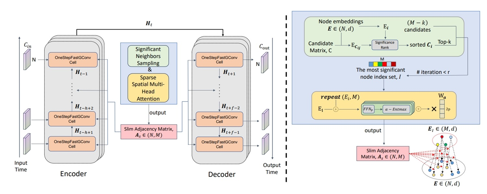
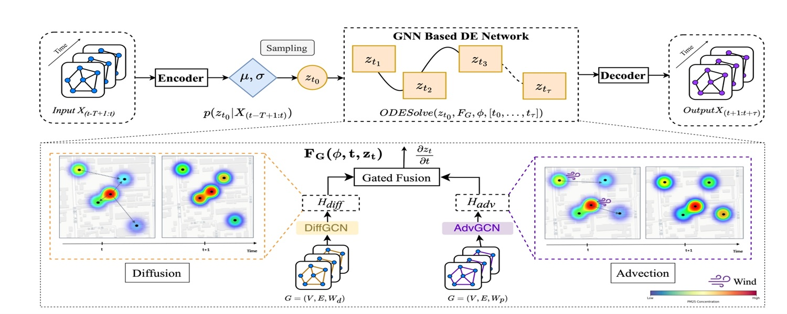

Welcome to the ST(spatial temporal)-Dataminer Research Laboratory

Our paper 'SAGDFN: A Scalable Adaptive Graph Diffusion Forecasting Network for Multivariate Time Series Forecasting' is accepted by ICDE 2024
